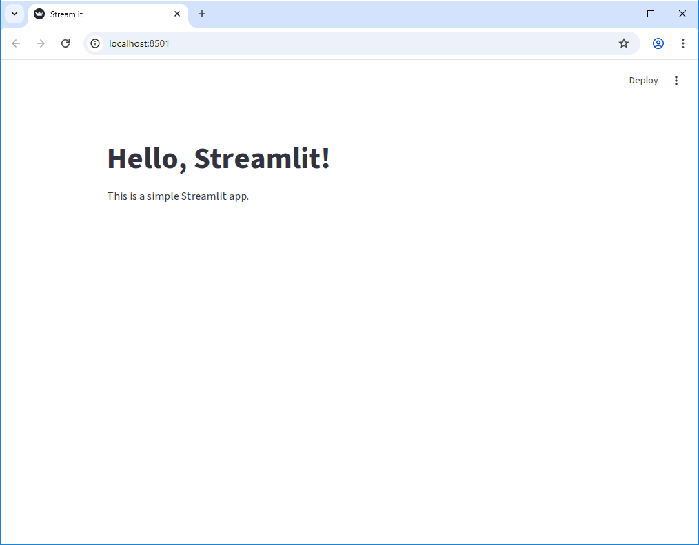
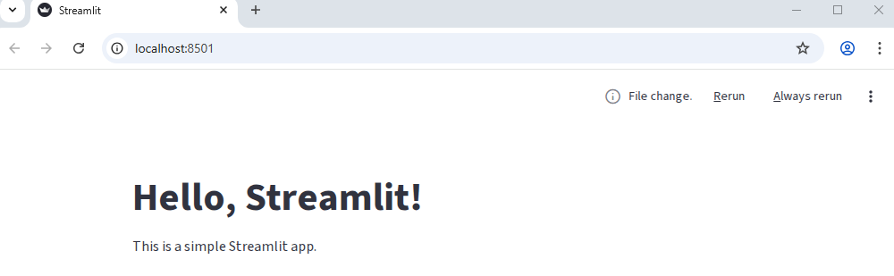
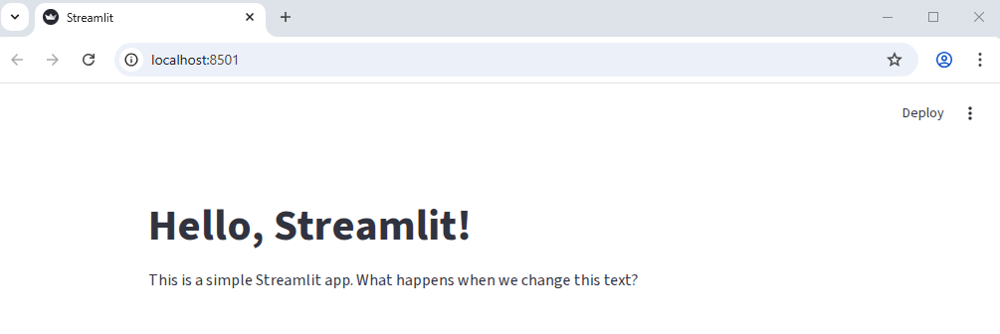
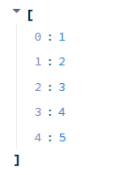
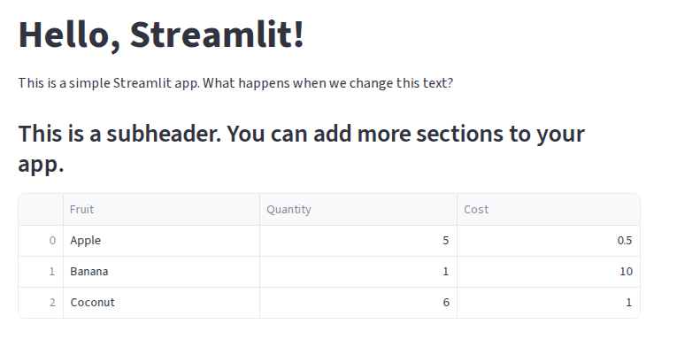
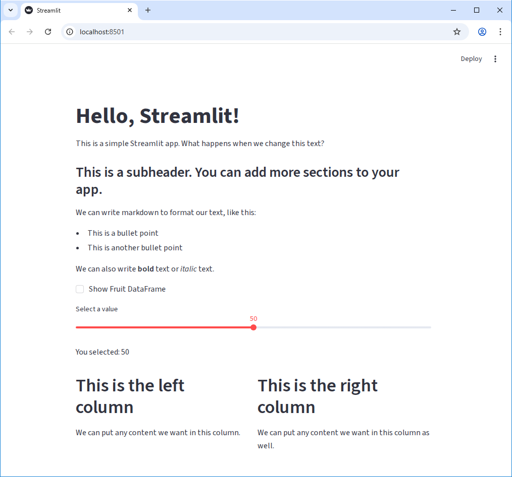

Content from UV and the Environment
Last updated on 2026-03-24 | Edit this page
Overview
Questions
- What is a Python Package Manager?
- What is a Virtual Environment?
- What is uv and how does it compare to pip and conda?
- How do I install uv and create a new Python project?
Objectives
- Create a new Python project using uv
- Add dependencies to a project with uv
Python Package Management and Virtual Environments
There are a number of tools already out there for managing Python
packages. You may already be familiar with pip and
conda. These tools are great for installing packages - you
can easily send someone a requirements.txt file and they
can install the same packages with
pip install -r requirements.txt. And that’s great! They can
install all the same packages that you have and run your code! But what
if they are working on a big project that’s stuck on an older version of
Python? Or what if they have a different version of a package that your
code relies on?
This is where virtual environments come in. A virtual environment is a self-contained directory that contains all the packages and dependencies for a specific project. This allows you to have different projects with different dependencies and Python versions on the same machine without conflicts.
There are several tools you might have heard of for creating and managing virtual environments:
venvvirtualenvcondapipenvpoetrypyenv
These tools all have strengths and weaknesses - for example,
venv is built into Python and is simple to use.
conda is great for managing complex dependencies and
different Python versions, but it can be slow and has its own ecosystem
of packages.
We’re going to use a tool called uv that is one of the
more recent entries into this space. uv is written in Rust
and is designed to be a fast, all-in-one Python package and project
manager. It provides a unified workflow for managing packages, virtual
environments, and Python versions, and can be easily installed using
pip or platform-specific installers.
Installing UV
If you don’t have uv installed yet, you can find
detailed installation instructions in the uv
documentation. For this workshop, we will be using the
pip package manager to install uv into our
base environment:
Collecting uv
Downloading uv-0.10.11-py3-none-win_amd64.whl.metadata (12 kB)
Downloading uv-0.10.11-py3-none-win_amd64.whl (24.2 MB)
---------------------------------------- 24.2/24.2 MB 153.4 MB/s 0:00:00
Installing collected packages: uv
Successfully installed uv-0.10.11(The exact version ma differ by the time you read this.) After the
installation is complete, you can verify that uv is
installed correctly by running:
And you should see output similar to:
uv 0.10.11Troubleshooting
If you get a message like “bash: uv: command not found”:
- Try restarting the terminal to refresh the PATH environment variable.
- Try running the command
python -m pip install --user uvagain - if the installation was successful, it should say “Requirement already satisfied” and provide you with a path to the installed package. Navigate to this folder, then look for aScriptssubfolder. Inside, you should find theuvexecutable. You can add this folder to your PATH environment variable to make theuvcommand available globally.
Starting a new project
Now that we have uv installed, let’s start our project.
Navigate to the folder where you want to create your project and
run:
uv will automatically create six files in the current
directory:
my-project/
├── .git
├── .gitignore
├── .python-version
├── main.py
├── pyproject.toml
└── README.mdHandy! Let’s walk through the files that were created:
-
.gitand.gitignoreare for version control with Git.uvessentially just rangit initfor us and created a basic.gitignorefile that ignores common Python artifacts like__pycache__and*.pycfiles. -
.python-versionis a file that specifies the Python version for this project. This is used byuvto create a virtual environment with the correct Python version. -
main.pyis a starter Python script that we can run to verify that our environment is set up correctly. -
pyproject.tomlis a configuration file that specifies the project metadata and dependencies. We will look closer at this in a minute. -
README.mdis a markdown file that provides an introduction to the project.
The main.py file is just a hello world kind of script. Let’s run it using uv instead of python:
You should see some output like this:
Using CPython 3.13.7
Creating virtual environment at: .venv
Hello from my-project!And if you look in the project folder, you’ll see that a new
.venv folder has been created. This is the virtual
environment for this project. uv automatically created it
for us when we ran the uv run command. This is one of the
key benefits of using uv - it handles virtual environment
creation and management for us, so we don’t have to worry about it.
Adding Dependencies
We know for this project, that we want to use the
streamlit package. With uv, we can add this
dependency to our project with uv add {package-name}. So
let’s run:
You should see a bunch of lines as uv starts downloading
the various dependencies of streamlit, and finally a
message like this:
Resolved 39 packages in 563ms
Prepared 38 packages in 35.75s
Installed 38 packages in 2.36s
+ altair==6.0.0
+ attrs==25.4.0
+ blinker==1.9.0
...If we check the pyproject.toml file, we can see that
there’s a new section of the file:
This is where uv keeps track of our project
dependencies. When we run uv add streamlit, it adds
streamlit to this list of dependencies. There’s also a new
file called uv.lock that was created. This is a lockfile
that contains the exact versions of all the packages that were
installed, along with their dependencies. This is useful for ensuring
exact reproducibility of our environment - all we have to do in order
for someone to create the exact same environment that we are developing
in is to have them clone our repository and run
uv sync.
We have a couple additional dependencies that we need to add for our project, so let’s add those now:
And with that, we’re ready to start building a Streamlit app!
- We can use
uvto create a new Python project withuv init. - We can add dependencies to our project with
uv add {package-name}. -
uvautomatically creates and manages a virtual environment for our project, aiding with reproducibility and avoiding conflicts between projects.
Content from Introduction to Streamlit
Last updated on 2026-03-24 | Edit this page
Estimated time: 20 minutes
Overview
Questions
- How do we create our own Streamlit app?
- How can I add text, data, and widgets to my Streamlit app?
- How can I adjust the appearance and layout of my Streamlit app?
Objectives
- Create a basic Streamlit app and run it in the browser
- Use
st.writeandst.markdownto add text and formatted text to our app - Add simple widgets to our app and understand how they work
- Add a multi-column layout to our app
Running a Streamlit App
We have our environment set up with streamlit installed, so let’s run a simple Streamlit app to see what it can look like. Streamlit comes with a built-in demo app that we can run to see some of the features of Streamlit in action. To run the demo, open your terminal and run the following command:
You should see something like the following output in your terminal:
Welcome to Streamlit. Check out our demo in your browser.
Local URL: http://localhost:8501
Network URL: http://137.226.104.51:8501
Ready to create your own Python apps super quickly?
Head over to https://docs.streamlit.io
May you create awesome apps!A new tab should open in your browser with the Streamlit demo app
running. You can interact with this just like it was a normal web app -
however if you look a the url in the address bar, you’ll notice that
it’s running on localhost:8501. This means that the app is
actually running on your local machine, and Streamlit is serving it to
your browser.
Feel free to click around for a minute and explore the demo app.
When you’re ready, you can stop the app by going back to your
terminal and pressing Ctrl + C.
Starting our own Streamlit App
Now that we’ve seen the demo app, let’s create our own. To start
with, let’s empty out the main.py file that
uv init created for us. Open main.py in your
code editor and delete all the existing code, then replace it with the
following:
PYTHON
import streamlit as st
st.title("Hello, Streamlit!")
st.write("This is a simple Streamlit app.")To run this app, we just need to modify our previous command a little
bit. Instead of running uv run streamlit hello, we can
run:
You should see the same output in your terminal, but now your browser should open a new tab that looks like this:

Editing the App
Let’s make a small change to our app to see how Streamlit handles
updates. Open main.py in your code editor and change the
st.write line to the following:
Back on our browser tab, you may see that nothing appears to have changed. However if you look closely at the upper right corner of the page, you should see that the “Deploy” link has been replaced with three new elements: the text “File change” and two clickable links “Rerun” and “Always rerun”.

Let’s click the “Always rerun” link and see what happens.

As you can see, the app has updated with our new text! Let’s make another change. Let’s add another line to out app that creates a subheading:
Switching back to our browser, we should see the changes implmented immediately without us having to refresh the page or click any buttons! This is one of the features of streamlit - as long as we don’t cancel the application running in the terminal, it will automatically detect changes to our code and update the app in real time.
Writing Markdown
We can also write plain markdown for our streamlit app, which allows
us to easily format large blocks of text. To write markdown, we can use
the st.markdown function. Let’s update our app to include
some markdown:
PYTHON
import streamlit as st
import pandas as pd
st.title("Hello, Streamlit!")
st.write("This is a simple Streamlit app. What happens when we change this text?")
st.subheader("This is a subheader. You can add more sections to your app.")
st.markdown(
"""
We can write markdown to format our text, like this:
- This is a bullet point
- This is another bullet point
We can also write **bold** text or *italic* text.
"""
)Displaying Data
We can do more than just display text though, of course. Let’s pass a
list of numbers to the st.write function and see what
happens:
When we save this change and switch back to our browser, we should see that the list of numbers is now a collapsable list in our app. We can click the little arrow next to the list to expand or collapse it.

Let’s try passing a different data object to st.write.
Let’s make a simple pandas DataFrame and pass that to
st.write:
PYTHON
import streamlit as st
import pandas as pd
st.title("Hello, Streamlit!")
st.write("This is a simple Streamlit app. What happens when we change this text?")
st.subheader("This is a subheader. You can add more sections to your app.")
st.markdown(
"""
We can write markdown to format our text, like this:
- This is a bullet point
- This is another bullet point
We can also write **bold** text or *italic* text.
"""
)
my_dataframe = pd.DataFrame(
{"Fruit": ["Apple", "Banana", "Coconut"], "Quantity": [5, 1, 6], "Cost": [0.5, 10.00, 1.0]}
)
st.write(my_dataframe)When we save this change and switch back to our browser, we should see that the DataFrame is now displayed as a table in our app:

But that’s not all - the table already has some built-in interactivity! We can click the column headers to sort the table, or, by hovering over the table, get a tooltip that allows us to download the table as a CSV, search the table, or make the table fullscreen.
st.write
The st.write function can be thought of similar to the
built-in print function in Python, but for Streamlit apps.
It can take in a wide variety of data types and will intelligently
display them in the app.
Widgets
We can add a variety of interactive widgets to our app. Try the following:
PYTHON
import streamlit as st
import pandas as pd
st.title("Hello, Streamlit!")
st.write("This is a simple Streamlit app. What happens when we change this text?")
st.subheader("This is a subheader. You can add more sections to your app.")
st.markdown(
"""
We can write markdown to format our text, like this:
- This is a bullet point
- This is another bullet point
We can also write **bold** text or *italic* text.
"""
)
if st.checkbox("Show Fruit DataFrame"):
my_dataframe = pd.DataFrame(
{"Fruit": ["Apple", "Banana", "Coconut"], "Quantity": [5, 1, 6], "Cost": [0.5, 10.00, 1.0]}
)
st.write(my_dataframe)
my_value = st.slider("Select a value", 0, 100, 50)
st.write(f"You selected: {my_value}")Layout
Finally, we can control the layout of our app using the built-in
layout functions. Let’s use the st.columns function to
create a two-column layout:
PYTHON
import streamlit as st
import pandas as pd
st.title("Hello, Streamlit!")
st.write("This is a simple Streamlit app. What happens when we change this text?")
st.subheader("This is a subheader. You can add more sections to your app.")
st.markdown(
"""
We can write markdown to format our text, like this:
- This is a bullet point
- This is another bullet point
We can also write **bold** text or *italic* text.
"""
)
if st.checkbox("Show Fruit DataFrame"):
my_dataframe = pd.DataFrame(
{"Fruit": ["Apple", "Banana", "Coconut"], "Quantity": [5, 1, 6], "Cost": [0.5, 10.00, 1.0]}
)
st.write(my_dataframe)
my_value = st.slider("Select a value", 0, 100, 50)
st.write(f"You selected: {my_value}")
left_column, right_column = st.columns(2)
with left_column:
st.header("This is the left column")
st.write("We can put any content we want in this column.")
with right_column:
st.header("This is the right column")
st.write("We can put any content we want in this column as well.")Our app at this point should look something like this:

Challenge 1: Add a Text Input Widget
We’ve seen a few widgets so far. Add a text input widget to your app that allows the user to enter their name, and then display a personalized greeting.
The function for creating a text input widget is
st.text_input.
Use the slider example as a reference.
Challenge 2: Add another column
Use the st.columns function to create a three-column
layout instead of a two-column layout. In the new column, add a widget
of your choice and some text.
PYTHON
left_column, center_column, right_column = st.columns(3)
with left_column:
st.header("This is the left column")
st.write("We can put any content we want in this column.")
with center_column:
st.header("This is the center column")
st.text_input("Enter some text")
with right_column:
st.header("This is the right column")
st.write("We can put any content we want in this column as well.")Challenge 3: st.metric
Play around with the st.metric widget. What does it do?
Try adding the parameter delta to it and see what
happens.
Bonus: Instead of a static value, use the st.slider
widget to create a metric that updates the delta based on the slider
value.
- We can run a Streamlit app with
uv run streamlit run {script-name}.py. - Streamlit automatically detects changes to our code and updates the app in real time.
- We can write text to our app using
st.writeandst.markdown. -
st.writecan take in a wide variety of data types and will intelligently display them. - Streamlit has a variety of built-in widgets that we can use to add interactivity to our app.
Content from Getting Data from an API
Last updated on 2026-03-24 | Edit this page
Estimated time: 12 minutes
Overview
Questions
- How can we incorporate live data into our application?
- What is an API and how can we use it to get data from a web service?
- How can we use Streamlit widgets to get user input and use that input to make API requests?
- How can we display data from an API?
Objectives
- Create a Streamlit app that makes requests to a web API and displays the data
- Use Streamlit widgets to get user input and use that input to make API requests
- Display data from an API in a Streamlit app using both
st.writeand charts
What is an API?
API stands for “Application Programming Interface”. An API is a set of rules and protocols that allows software to comunicate with each other. For our purposes here, an API is a way for us to get data from a web service. The data is typically (but not always!) return in JSON format, which allows us to easily work with it in Python.
Getting Data from an API
Let’s start fresh with a new file. Use Ctrl-C to close our basic
streamlit app, then let’s create a new file called
weather_app.py and open it in your code editor. We can
start by just adding some simple text to our app to make sure it’s
working:
PYTHON
import streamlit as st
st.header("My Weather App")
st.write("Enter a Location to get the current temperature forcast.")We’re going to use an open API from Open-Meteo to get weather data. Because it’s open, we won’t need an API key or credentials to access it. In essence, an API is just an address on the internet that will return data. Looking at the Open-Meteo API documentation, we can see that we can get the weather forcast for a specific location by sending request like this:
https://api.open-meteo.com/v1/forecast?latitude=52.52&longitude=13.41&hourly=temperature_2mPutting that URL into our browser will return a JSON object:
JSON
{
"latitude": 52.52,
"longitude": 13.419998,
"generationtime_ms": 0.0736713409423828,
"utc_offset_seconds": 0,
"timezone": "GMT",
"timezone_abbreviation": "GMT",
"elevation": 38,
"hourly_units": {
"time": "iso8601",
"temperature_2m": "°C"
},
"hourly": {
"time": [
"2026-03-18T00:00",
"2026-03-18T01:00",
"2026-03-18T02:00",
"2026-03-18T03:00",
...Looking at the URL, there’s a question mark (?) followed
by a series of key-value pairs separated by ampersands
(&). This is called the “query string” and it’s used to
specify the parameters for our API request. Let’s add this query to our
Streamlit app and see how it returns the data. We need another library
for this - requests. This is a popular library for making
HTTP requests in python.
In our first episode, we set up uv and added the
requests package to our project. If you haven’t done that
yet, run the command uv add requests in your terminal to
add it to your project.
PYTHON
import requests
import streamlit as st
st.header("My Weather App")
st.write("Enter a Location to get the current temperature forcast.")
url = "https://api.open-meteo.com/v1/forecast?latitude=52.52&longitude=13.41&hourly=temperature_2m&forecast_days=1"
response = requests.get(url)
data = response.json()
st.write(data)When you run this code, you should see the JSON data from the API displayed in your Streamlit app.

When using APIs, it’s good practice to check the API documentation to see if there are any restrictions on how many requests you can make in a certain time period (called “rate limits”), or if there are any specific parameters you need to include in your request. It’s important to be a good API consumer and follow any guidelines set by the API provider.
If we were requesting lots of data, or making the same request multiple times, we might want to add caching to our app to avoid hitting rate limits or to improve performance. But for this simple app, we’ll just make the request directly without caching.
Using a widget to get user input
In the previous episode we saw how to use Streamlit widgets to get
user input. Let’s add a pair of widgets to let the user specify the
latitude and longitude for the location they want to get the weather
forcast for. We can use st.number_input to get numeric
input from the user:
PYTHON
import requests
import streamlit as st
st.header("My Weather App")
st.write("Enter a Location to get the current temperature forcast.")
latitude = st.number_input("Latitude", key="latitude", value=52.52)
longitude = st.number_input("Longitude", key="longitude", value=13.41)
url = f"https://api.open-meteo.com/v1/forecast?latitude={latitude}&longitude={longitude}&hourly=temperature_2m&forecast_days=1"
response = requests.get(url)
data = response.json()
st.write(data)Now, as you change the values in the number inputs, you can see the API data update in real time to show the weather forcast for the new location.

Displaying a chart with the API data
Of course, we want to do something more interesting than just displaying a list of numbers. Let’s co convert the data into a Pandas DataFrame:
PYTHON
import pandas as pd
import requests
import streamlit as st
st.header("My Weather App")
st.write("Enter a Location to get the current temperature forcast.")
latitude = st.number_input("Latitude", key="latitude", value=52.52)
longitude = st.number_input("Longitude", key="longitude", value=13.41)
url = f"https://api.open-meteo.com/v1/forecast?latitude={latitude}&longitude={longitude}&hourly=temperature_2m&forecast_days=1"
response = requests.get(url)
data = response.json()
df = pd.DataFrame(data["hourly"]).rename(columns={"time": "Time", "temperature_2m": "Temperature (°C)"})
st.write(df)
Getting there, but we can do better! Since we have data with a time
component, it would be nice to display it as a line chart. Much like the
st.write function, Streamlit can do a fair bit of guessing
about how to display our data based on the data type. Let’s tell it that
the index of the dataframe is Time and pass the dataframe
to st.line_chart:
PYTHON
import pandas as pd
import requests
import streamlit as st
st.header("My Weather App")
st.write("Enter a Location to get the current temperature forcast.")
latitude = st.number_input("Latitude", key="latitude", value=52.52)
longitude = st.number_input("Longitude", key="longitude", value=13.41)
url = f"https://api.open-meteo.com/v1/forecast?latitude={latitude}&longitude={longitude}&hourly=temperature_2m&forecast_days=1"
response = requests.get(url)
data = response.json()
df = pd.DataFrame(data["hourly"]).rename(columns={"time": "Time", "temperature_2m": "Temperature (°C)"})
df["Time"] = pd.to_datetime(df["Time"])
df.set_index("Time", inplace=True)
st.line_chart(df)You should get something like this:

Cleaning up our code
The API URL is hard to read and has a lot of string concatenation. We
can use the params argument of requests.get to
make this cleaner.
PYTHON
import pandas as pd
import requests
import streamlit as st
API_URL = "https://api.open-meteo.com/v1/"
st.header("My Weather App")
st.write("Enter a Location to get the current temperature forcast.")
latitude = st.number_input("Latitude", key="latitude", value=52.52)
longitude = st.number_input("Longitude", key="longitude", value=13.41)
params = {
"latitude": latitude,
"longitude": longitude,
"hourly": "temperature_2m",
"forecast_days": 1
}
response = requests.get(f"{API_URL}forecast", params=params)
data = response.json()
df = pd.DataFrame(data["hourly"]).rename(columns={"time": "Time", "temperature_2m": "Temperature (°C)"})
df["Time"] = pd.to_datetime(df["Time"])
df.set_index("Time", inplace=True)
st.line_chart(df)Challenge 1: Fine-tuning Widgets
Our latitude and longitude inputs currently allow the user to enter in any number, which means we can make requests to the API with invalid coordinates. Use the Streamlit Documentation for st.number_input to prevent the user for entering in invalid coordinates.
(Latitude should be between -90 and 90, and longitude should be between -180 and 180.)
You can use the min_value and max_value
parameters of st.number_input.
Challenge 2: Geocoding
It’s not very user-friendly to have to enter in the exact latitude and longitude for a location. It would be much nicer if the user could just enter in a city name and have the app figure out the latitude and longitude for that city. Looking at the Open-Meteo documentation, we can see that they only let us provide data as coordinates, but there is another endpoint we can use to convert a city name into coordinates: https://open-meteo.com/en/docs/geocoding-api
Replace the latitude and longitude number inputs with a single text input where the user can enter a city name. Then, use the geocoding API to convert that city name into latitude and longitude coordinates, which you can then use to get the weather data as before.
The geocoding API uses a slightly different URL and parameters than the weather API, so you’ll need to make a separate API request to get the coordinates before you can make the request to get the weather data.
Create a text input widget for the city name, then make a request to the geocoding API with the city name as the “name” parameter. The API will return a JSON object with a “results” key, which is a list of potential matches for the city name. You can take the first result and extract the “latitude” and “longitude” from it to use in the weather API request.
PYTHON
import pandas as pd
import requests
import streamlit as st
GEOCODING_API_URL = "https://geocoding-api.open-meteo.com/v1/"
WEATHER_API_URL = "https://api.open-meteo.com/v1/"
st.header("My Weather App")
st.write("Enter a Location to get the current temperature forcast.")
# Create a text input for the city name
city_name = st.text_input("City Name", key="city_name", value="Düsseldorf")
# We only care about the first result, so we'll set count=1 to only get one result back from the API
params = {
"name": city_name,
"count": 1
}
# Make a request to the geocoding endpoint to get the coordinates for the city name
response = requests.get(f"{GEOCODING_API_URL}search", params=params)
data = response.json()
# Extract the latitude and longitude from the API response
latitude = data["results"][0]["latitude"]
longitude = data["results"][0]["longitude"]
params = {
"latitude": latitude,
"longitude": longitude,
"hourly": "temperature_2m",
"forecast_days": 1
}
response = requests.get(f"{WEATHER_API_URL}forecast", params=params)
data = response.json()
df = pd.DataFrame(data["hourly"]).rename(columns={"time": "Time", "temperature_2m": "Temperature (°C)"})
df["Time"] = pd.to_datetime(df["Time"])
df.set_index("Time", inplace=True)
st.line_chart(df)Challenge 3: Adding Metrics
In addition to the line chart, it would be great to show some metrics
at the top of the app, like the current temperature, and the high and
low for the day. Use the st.metric component to add these
metrics to the top of the app and st.columns to put them
side by side.
Some code snippets you might find useful:
PYTHON
# Get the current temperature (the first value in the "Temperature (°C)" column, where the "Time"
# index is greater than the current time)
current_temp = df[df.index > pd.Timestamp.now()]["Temperature (°C)"].iloc[0]
# Get the high and low for the day (the max and min of the "Temperature (°C)" column)
high_temp = df["Temperature (°C)"].max()
low_temp = df["Temperature (°C)"].min()
# The "format" parameter of st.metric takes a string like this: "%d.4 kgs" where the "%d.4" part is
# replaced with the value of the metric, formatted to 4 decimal places.Bonus: Add a delta to the high and low metrics to show how much they differ from the current temperature.
Your final app should look something like this:

There are three parameters in the st.metric function
that are useful for this: label, value, and
format. (four, if you include delta)
PYTHON
import pandas as pd
import requests
import streamlit as st
GEOCODING_API_URL = "https://geocoding-api.open-meteo.com/v1/"
WEATHER_API_URL = "https://api.open-meteo.com/v1/"
st.header("My Weather App")
st.write("Enter a Location to get the current temperature forcast.")
# Create a text input for the city name
city_name = st.text_input("City Name", key="city_name", value="Düsseldorf")
# We only care about the first result, so we'll set count=1 to only get one result back from the API
params = {"name": city_name, "count": 1}
# Make a request to the geocoding endpoint to get the coordinates for the city name
response = requests.get(f"{GEOCODING_API_URL}search", params=params)
data = response.json()
# Extract the latitude and longitude from the API response
latitude = data["results"][0]["latitude"]
longitude = data["results"][0]["longitude"]
params = {
"latitude": latitude,
"longitude": longitude,
"hourly": "temperature_2m",
"forecast_days": 1,
}
response = requests.get(f"{WEATHER_API_URL}forecast", params=params)
data = response.json()
df = pd.DataFrame(data["hourly"]).rename(
columns={"time": "Time", "temperature_2m": "Temperature (°C)"}
)
df["Time"] = pd.to_datetime(df["Time"])
df.set_index("Time", inplace=True)
# Get the current temperature (the first value in the "Temperature (°C)" column, where the "Time"
# index is greater than the current time)
current_temp = df[df.index > pd.Timestamp.now()]["Temperature (°C)"].iloc[0]
# Get the high and low for the day (the max and min of the "Temperature (°C)" column)
high_temp = df["Temperature (°C)"].max()
low_temp = df["Temperature (°C)"].min()
left_column, center_column, right_column = st.columns(3)
with left_column:
st.metric("Current Temperature", current_temp, format="%.1f °C")
with center_column:
st.metric("High", high_temp, format="%.1f °C", delta=high_temp - current_temp)
with right_column:
st.metric("Low", low_temp, format="%.1f °C", delta=low_temp - current_temp)
st.line_chart(df)- APIs allow us to get data from web services and incorporate it into our applications.
- We can use the
requestslibrary to make HTTP requests to APIs and get data back in JSON format. - Streamlit widgets can be used to get user input and use that input to make API requests, allowing us to create interactive applications that incorporate live data.
Content from Connecting to APIs and Managing Secrets
Last updated on 2026-03-24 | Edit this page
Estimated time: 12 minutes
Overview
Questions
Objectives
What about APIs that require authentication?
So far, we’ve looked only at APIs that are open and don’t require any sort of authentication. However many APIs require you to have an account or some kind of API key to access the data. We want to make sure that we don’t accidentally share our API keys in our code, so we need a way to manage our secrets securely.
In this episode, we’ll look at how to use the
python-dotenv library to manage our secrets and keep them
out of our code.
To start with, let’s create a new streamlit file called
coscine-app.py and add the following:
The python-dotenv library and .env
files
In our setup we included a library called python-dotenv,
but we haven’t used it yet. This library allows us to store secrets in a
special file called .env. We can exclude this file from our
version control, so we don’t accidentally share it, and we can use this
library to put secrets from this file temporarily into our environment
variables when we run our app. This mimics how secrets are often managed
in production environments, so we can be more confident that our app
will work when we deploy it.
Getting a Secret
For this workshop, we’ll be using the Coscine API and python SDK. To
begin, we’ll get a token from the Coscine website and store it in our
.env file. The secrets in the env file are stored as
key-value pairs, so we can add a line like this to our .env
file:
COSCINE_TOKEN=your_token_hereLoading Secrets with python-dotenv
Now that we have our token stored in our .env file, we
can use the python-dotenv library to load the secrets from
this file into our environment variables when we run our app.
PYTHON
import os
from dotenv import load_dotenv
import streamlit as st
st.title("Coscine API Demo")
st.write("This is a demo of how to use the Coscine API in a Streamlit app.")
# Load secrets from .env file
load_dotenv()
if os.getenv("COSCINE_TOKEN") is None:
st.error("No Coscine token found.")
else:
st.success("Coscine token found!")Using the Coscine SDK to populate a widget
Now that we can get our token in our app, we can use the Coscine SDK to make API requests and retrieve data about our projects.
PYTHON
import os
import coscine
from dotenv import load_dotenv
import streamlit as st
st.title("Coscine API Demo")
st.write("This is a demo of how to use the Coscine API in a Streamlit app.")
# Load secrets from .env file
load_dotenv()
if os.getenv("COSCINE_TOKEN") is None:
st.error("No Coscine token found.")
# I deleted the else statement - we only care to see a message if there is no token
client = coscine.ApiClient(os.getenv("COSCINE_TOKEN"))
project_list = [project.display_name for project in client.projects()]
selected_project = st.selectbox(
"Project",
project_list,
index=None,
placeholder="Select a project",
)And once we have the project, we can also use the SDK to get a list of resources for that project and display them in another widget!
PYTHON
import os
import coscine
from dotenv import load_dotenv
import streamlit as st
st.title("Coscine API Demo")
st.write("This is a demo of how to use the Coscine API in a Streamlit app.")
# Load secrets from .env file
load_dotenv()
if os.getenv("COSCINE_TOKEN") is None:
st.error("No Coscine token found.")
# I deleted the else statement - we only care to see a message if there is no token
client = coscine.ApiClient(os.getenv("COSCINE_TOKEN"))
project_list = [project.display_name for project in client.projects()]
selected_project = st.selectbox(
"Project",
project_list,
index=None,
placeholder="Select a project",
)
project = client.project(selected_project)
resource_list = [resource.display_name for resource in project.resources()]
selected_resource = st.selectbox(
"Resource",
resource_list,
index=None,
placeholder="Select a resource",
)Wait, we get an error! Why?
Controlling Program Flow with Conditionals
Because when the app first runs, there is no project selected yet, so
when we try to get the project with
client.project(selected_project), it throws an error
because selected_project is None. We can fix
this by adding a simple check to make sure that a project is selected
before we try to get the project:
PYTHON
selected_project = st.selectbox(
"Project",
project_list,
index=None,
placeholder="Select a project",
)
if selected_project is not None:
project = client.project(selected_project)
resource_list = [resource.display_name for resource in project.resources()]
selected_resource = st.selectbox(
"Resource",
resource_list,
index=None,
placeholder="Select a resource",
)
if selected_resource:
resource = project.resource(selected_resource)
with st.expander("Resource Metadata"):
st.write(resource)
all_resource_files = list(resource.files())
num_files_in_resource = len(all_resource_files)
st.write(f"Number of files in resource: {num_files_in_resource}")User Feedback for Long Running Operations
The next thing we’d like to do is gather the metadata for the
selected resource and display it in our application. We can do this by
iterating through all of the files in resource.files() and
getting the metadata for each file. However, this requires a separate
API request for each file, which can take some time if there are a lot
of files. I would be nice to give the user some feedback that something
is happening while we wait for our app to complete this task. We can do
this with the st.spinner and st.progress
widgets:
PYTHON
if selected_project is not None:
project = client.project(selected_project)
resource_list = [resource.display_name for resource in project.resources()]
selected_resource = st.selectbox(
"Resource",
resource_list,
index=None,
placeholder="Select a resource",
)
if selected_resource:
resource = project.resource(selected_resource)
with st.expander("Resource Metadata"):
st.write(resource)
all_resource_files = list(resource.files())
num_files_in_resource = len(all_resource_files)
st.write(f"Number of files in resource: {num_files_in_resource}")
overall_file_data = []
with st.spinner("Summarizing metadata across all files in the resource..."):
bar = st.progress(0)
for i, file in enumerate(all_resource_files):
overall_file_data.append(dict(file.metadata_form()))
bar.progress((i + 1) / num_files_in_resource)
st.dataframe(overall_file_data)Challenge 1: Add a filter widget
Our app currently displays all of the metadata for a given resource. The default dataframe widget let’s us search, but what if we have some numerical data we want to filter on? Add a slider widget that allows us to filter the files in the resource by these numerical values.
If your resource doesn’t have any numerical metadata, you can add some fake data to the metadata for each file in the resource by adding random numbers to our metadata like this:
PYTHON
import random
...
overall_file_data = []
with st.spinner("Summarizing metadata across all files in the resource..."):
bar = st.progress(0)
for i, file in enumerate(all_resource_files):
file_metadata = dict(file.metadata_form())
file_metadata["random_number"] = random.randint(0, 100)
overall_file_data.append(file_metadata)
bar.progress((i + 1) / num_files_in_resource)You can use the st.slider widget to create a slider that
allows the user to select a range of values. Then, you can use this
range to filter the dataframe before displaying it.
PYTHON
numerical_filter = st.slider(
"Filter by 'random number'",
min_value=0,
max_value=100,
value=(0, 100),
step=1,
)
st.write(f"Filtering to show only files with 'random number' between {numerical_filter[0]} and {numerical_filter[1]}")
filtered_file_data = [
file_data
for file_data in overall_file_data
if numerical_filter[0] <= file_data["random_number"] <= numerical_filter[1]
]
st.dataframe(filtered_file_data)Challenge 2: Caching Data
You might have noticed in the previous challenge, that every time we
move the slider, the app has to re-run the code to load all of the
metadata back in. This is of course not idea, since if there are many
files in the resource, this can take a long time. We can implement a
caching solution to this problem using the st.cache_data
decorator on a function that loads the metadata.
First, we move the code that loads the metadata into a separate
function and add the @st.cache_data decorator to it:
PYTHON
@st.cache_data
def load_file_data(project_name, resource_name):
project = client.project(project_name)
resource = project.resource(resource_name)
file_data = []
for file in resource.files():
metadata = dict(file.metadata_form())
metadata["random_number"] = random.randint(0, 100)
file_data.append(metadata)
return file_dataHow would we update the rest of our code to use this new function?
In our main app code, we call this function to load the metadata:
That’s it! When the slider is moved, the app is still technically re-running, but the metadata is being loaded from the cache instead of making new API requests, so it should be much faster.
Content from Creating Additional Apps
Last updated on 2026-03-24 | Edit this page
Estimated time: 12 minutes
Overview
Questions
- What are some other apps I can build with Streamlit and APIs?
Objectives
- Experiment with building different types of apps using Streamlit and APIs
Building Additional Apps
We’ve made a demo app, a simple weather app, and a Coscine app. There’s lots of possibilities for other apps we can build! This section contains some ideas and starting code for some other apps for you to play around with.
App Ideas
Use the Deck Of Cards API to simulate a simple card game.
The url https://deckofcardsapi.com/ has endpoints to let you shuffle a deck of cards, draw cards, and even create a “pile” of cards that you can draw from later. It also returns information about the cards in the deck, such as their suit and value and an image you can display. Some code to get started:
PYTHON
DECK_OF_CARDS_API_URL = "https://deckofcardsapi.com/api/"
if st.button("Shuffle a new deck of cards"):
response = requests.get(f"{DECK_OF_CARDS_API_URL}deck/new/shuffle/?deck_count=1")
data = response.json()
st.session_state.deck_id = data["deck_id"]
if "deck_id" in st.session_state:
if st.button("Draw a card"):
response = requests.get(f"{DECK_OF_CARDS_API_URL}deck/{st.session_state.deck_id}/draw/?count=1")
data = response.json()
card = data["cards"][0]
# Display the card image and information about the cardWe haven’t used st.session_state yet, but it’s a way to
store information across interactions in a Streamlit app. In this case,
we can use it to store the deck_id that we get back from
the API when we shuffle a new deck of cards, so that we can use that
same deck_id when we draw cards from the deck.
Use the Dictionary API to create a simple dictionary app.
PYTHON
DICTIONARY_API_URL = "https://api.dictionaryapi.dev/api/v2/entries/en/"
word = st.text_input("Enter a word to look up in the dictionary", "hello")
response = requests.get(f"{DICTIONARY_API_URL}{word}")
data = response.json()
st.title(f"Results for '{word}'")
phonetics = data[0].get("phonetics", [])
if phonetics:
# Display the phoenetic transcriptions, and use `st.audio` to play the audio if available
meanings = data[0].get("meanings", [])
if meanings:
# Display the definitions for the word, grouped by part of speechUse the Met Museum API to create an art search app.
The Metropolitan Museum of Art has an open API that allows you to search their collection and get information about the objects in their collection. Here’s some starter code to create a simple form for searching the collection. See if you can take the output of this form and use it to set the paramters for an API request to the Met Museum API to get search results based on the user’s input.
PYTHON
API_URL = "https://collectionapi.metmuseum.org/public/collection/v1/search"
with st.form("search_form"):
search_query = st.text_input(
"Search Query", placeholder="e.g. sunflowers, portrait, Greek vase"
)
with st.expander("Advanced Search", expanded=False):
col1, col2 = st.columns(2)
with col1:
filter_title = st.checkbox("Search in Title")
filter_tags = st.checkbox("Search in Tags")
filter_artist = st.checkbox("Search by Artist / Culture")
with col2:
medium = st.text_input(
"Medium", placeholder="e.g. Paintings, Sculpture (comma-separated)"
)
geo_location = st.text_input(
"Geographic Location", placeholder="e.g. France, Europe (comma-separated)"
)
date_col1, date_col2 = st.columns(2)
with date_col1:
date_begin = st.number_input(
"Start Year", min_value=-10000, max_value=2100, value=None, placeholder="e.g. 1500"
)
with date_col2:
date_end = st.number_input(
"End Year", min_value=-10000, max_value=2100, value=None, placeholder="e.g. 1800"
)
submitted = st.form_submit_button("Search", use_container_width=True)
st.write(f"Search Query: {search_query}")
st.write(f"Filter by Title: {filter_title}")
st.write(f"Filter by Tags: {filter_tags}")
st.write(f"Filter by Artist/Culture: {filter_artist}")
st.write(f"Medium: {medium}")
st.write(f"Geographic Location: {geo_location}")
st.write(f"Date Range: {date_begin} - {date_end}")